Bryan wearing dresses
July 14, 2024
... AKA the ongoing history of me putting one of my characters in a dress.
Okay, so hear me out, I may just be a stranger on the internet but hear me out. Dresses are awesome. If it's the right dress they can be comfy. There are dresses for every occasion. And especially on hot summer days they can be a relief. And in my opinion, dresses shouldn't be exclusively to girls and women. I think that men can also wear dresses and be proud to do so. If the dress fits the person they should go for it.
That being said, I am all in on also drawing male characters in dresses. To be honest, in my case, it's basically just one male character that I constantly dress in dresses: One of my main characters, Bryan.
How it all started...
So you now may ask:
- He's the first male character I put in a dress.
- I am obsessed with drawing him.
- And I think dresses fit him.
The first time I put him (or any male character) into a dress was 7 years ago, way back in 2017. Back then he didn't even have a name :v I just scribbled a bunch of doodles on a sheet of paper while I was in a plane.
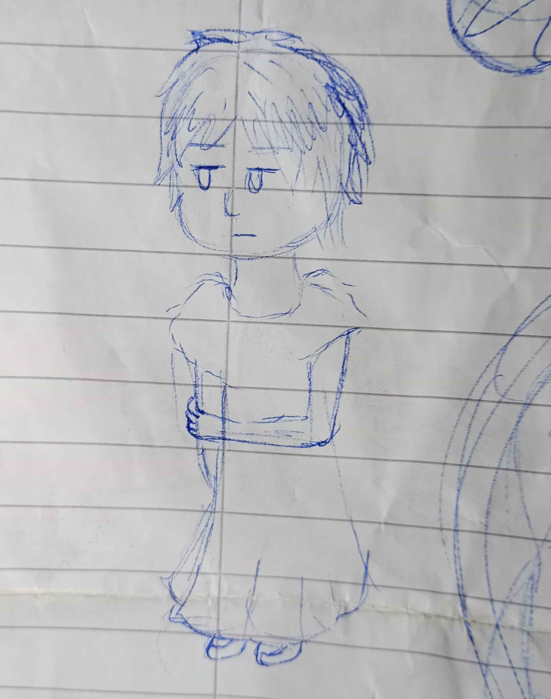
Doodle made on a plane in 2017Back then I didn't even know what I started. Just a year later I decided to again, put him in a dress. And then for Halloween 2018 again.
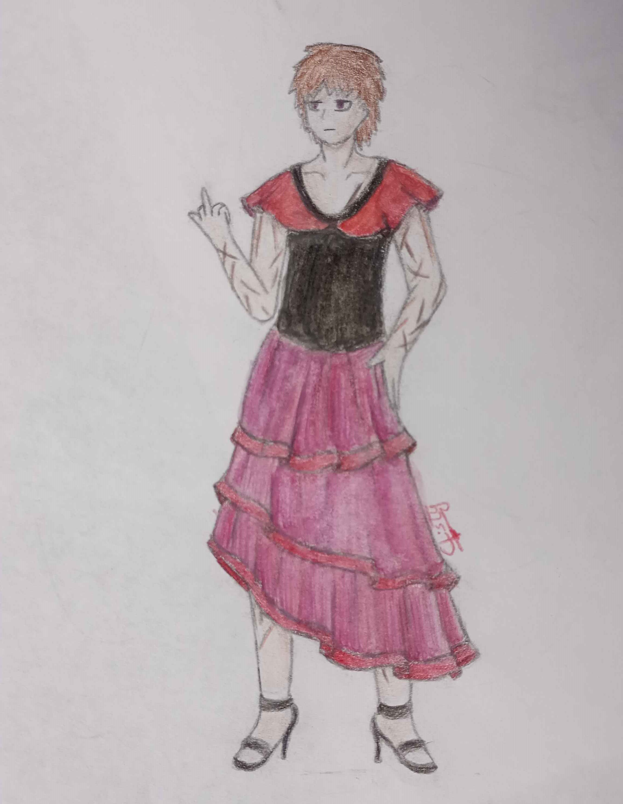
Bryan wearing a tango dress (2018)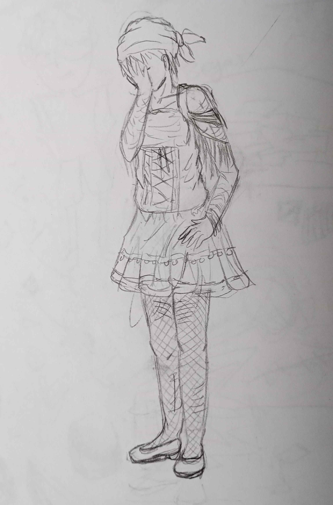
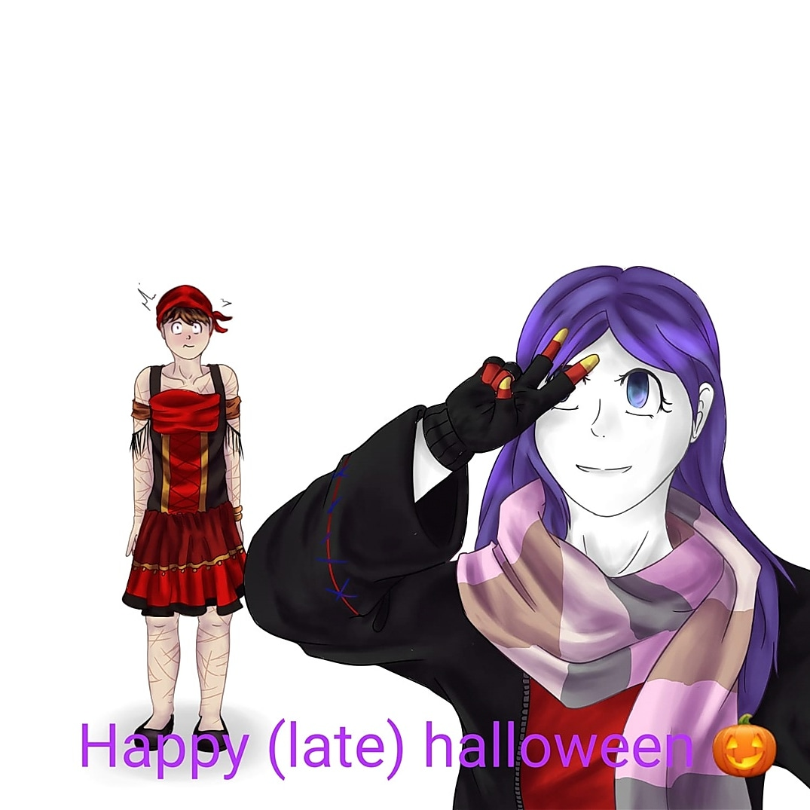
Sketch of Bryan wearing his Halloween outfit Bryan wearing a dress for Halloween 2018It all became such a meme among my friends that I even did a little comic about it:
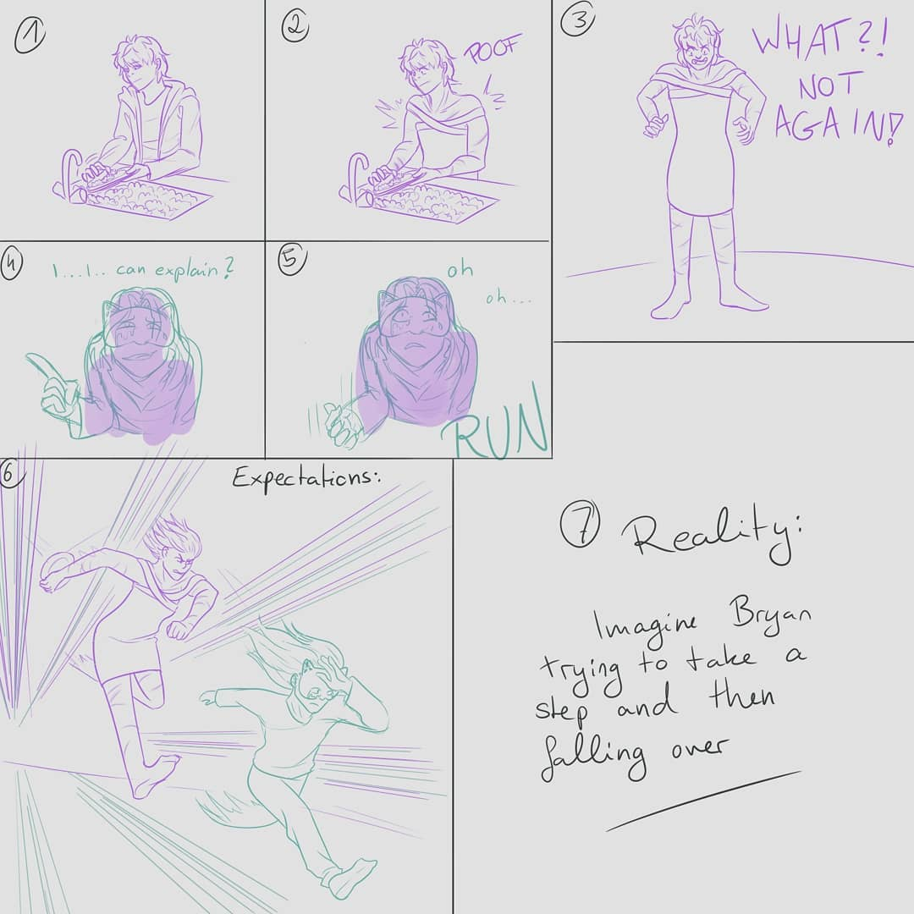
Bryan chasing me because I put him in a dress once again (2020)The most recent drawing was made earlier this year. Honestly, I can't remember what directly inspired me but I had this very cool dress idea in my head that I wanted to try out. And so Bryan had to be the model yet again.
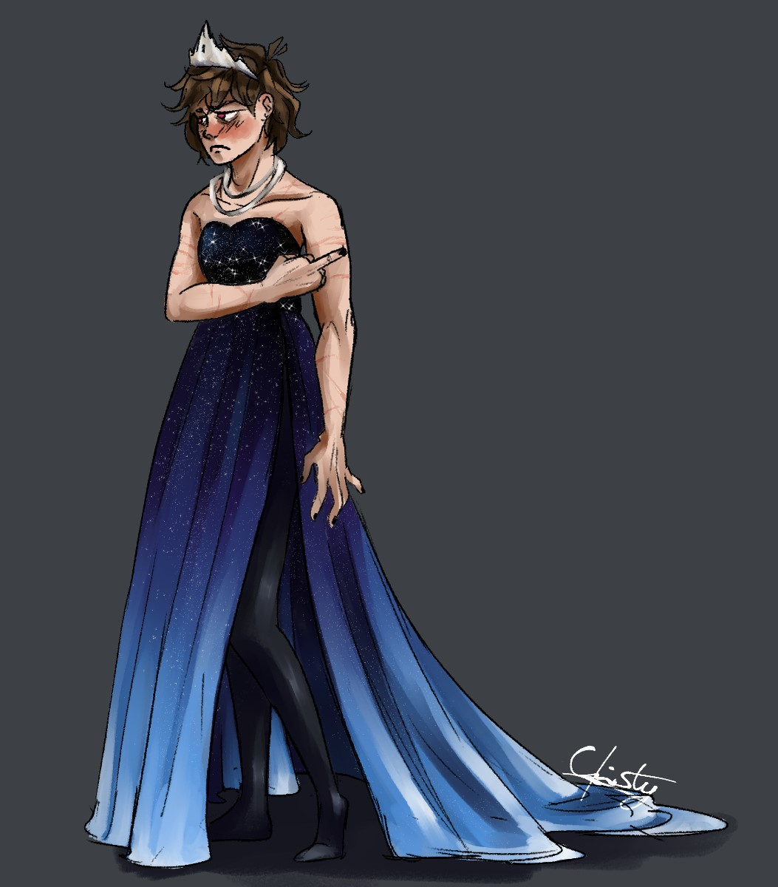
Bryan wearing a starry blue dress (2024)Not solely him
In the same month as the little meme comic, there was this trend with the strawberry dress going. Furthermore there was a followup trend with 2 dresses. One being the strawberry dress and the other a goth dress.
So I knew what I had to do. Put Bryan in another dress. Though this time he shouldn't be alone, so I put his best friend in the goth dress. And will you look at them both rocking the dresses.
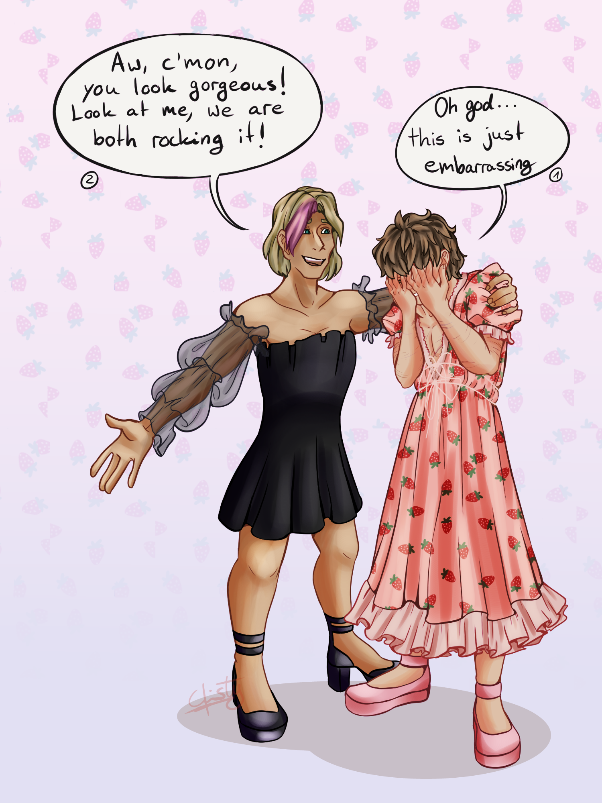
Nathan and Bryan wearing the trend dresses (2020)In hindsight I think the dresses would have fitted them better the other way around. Oh well.
It's not the fact that it's a dress btw
Now, I said at the beginning that men who wear dresses should be proud doing so and I still stand by it. But you might also have noticed that in the drawings so far, he is not really proud in wearing a dress. And that's because if he would react in any other way it would be out of character. The dresses so far have all been dresses that expose rather a lot of skin. And exactly that is his problem with the dresses.
So to compensate that and make that man happy for once in a while I doodled him in 2020 wearing a much longer dress. And look at that, is that a genuine smile? :D
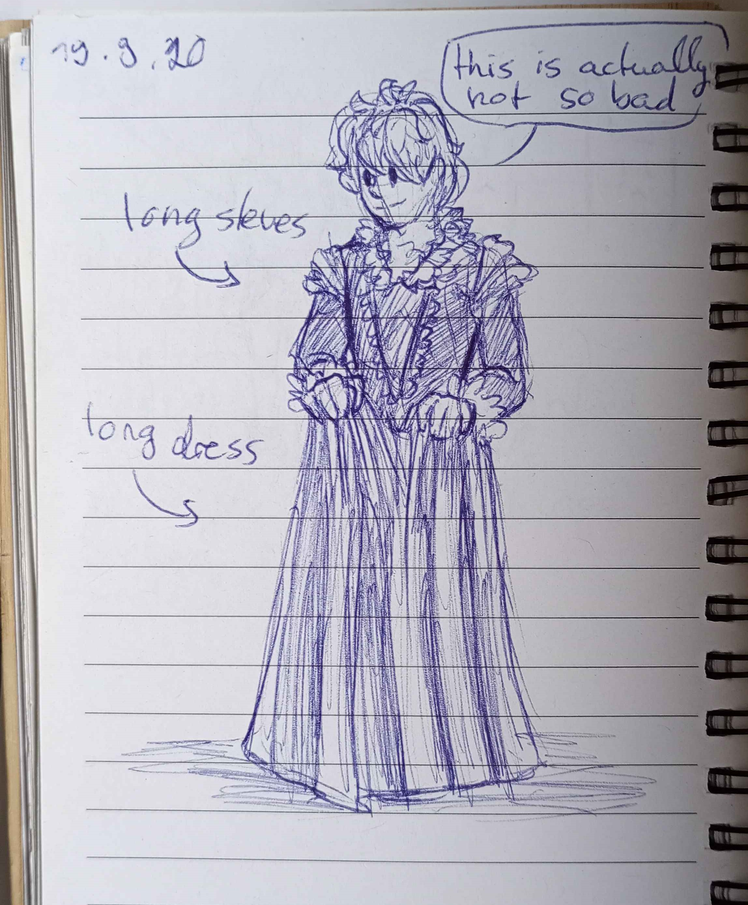
Bryan happy in a dress (2020)Two years later, 2022, he even got a full water color drawing where he is wearing a dress that actually fits his character. So you see, it all comes down to what the dress is like ^^
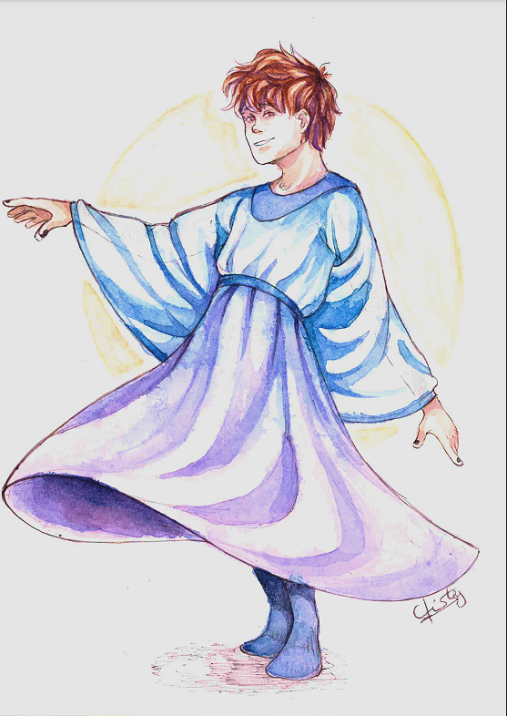
Second time that he is happy in a dress (2022)My favorite so far: The Maid dress
I gotta admit, my favorite drawing so far is the one from 2021 where I put Bryan in a maid dress. This idea originated from one of my friends back then and honestly I think it suits him.
 Maid dress (2021)
Maid dress (2021)
But the real reason why that drawing is my favorite is that I really like the way my art style was back then :') I like the colors, the shading and ofc the way I drew his hair.
Also, I want those socks for myself now.
Other contributions
As previously mentioned, me putting Bryan in a dress is quite well known among my friends. So much that when I drew the most recent piece (the one from 2024) I asked about the color palette. And since I decided to use a blue color palette while a friend of mine was imagining a more fiery dress, he himself drew Bryan a wonderful dress:
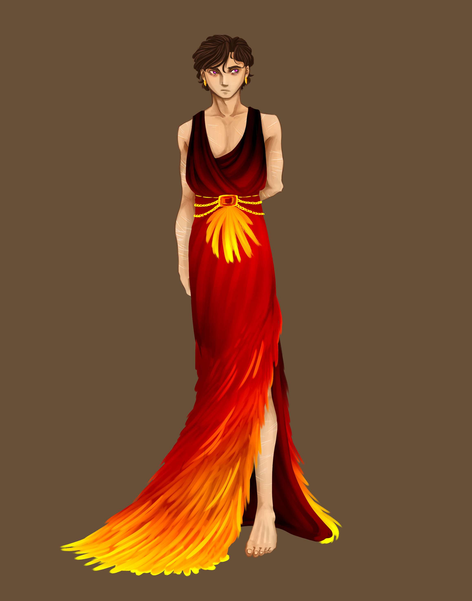
"BRYAN IN A VERY BEAUTIFUL PHEONIX DRESS" by Robin (2024)I did draw a sketch of the friend of mine (Robin) taking a picture of Bryan. Though since it's basically the same drawing as above but as a quick sketch I won't count that one.
Writing this blog post
So finally you may be asking:
Well, it's my blog and I really wanted to see all of the drawings next to each other to see how I have progressed with my drawing skill. And what's better than having one thing you draw over and over that you can compare with each other???
Also why not? It's a fictional character I came up with and I really like drawing dresses. So I am excited to see my future progress and find more nice dresses that I can draw.
I hope you had fun following me trough my journey of drawing guys in dresses and see you on the next post :D
Searching for all the drawings just to write a blog post be like:
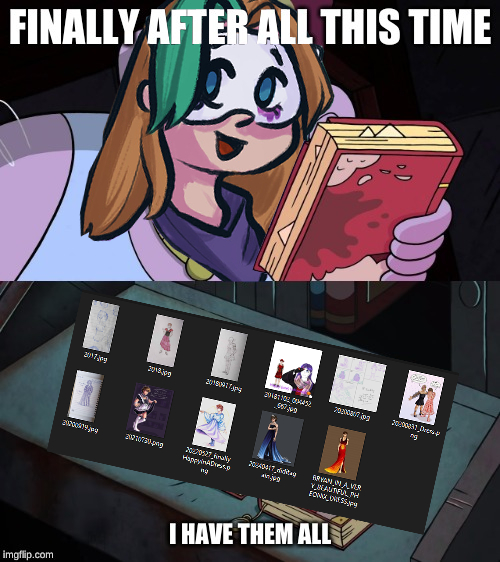